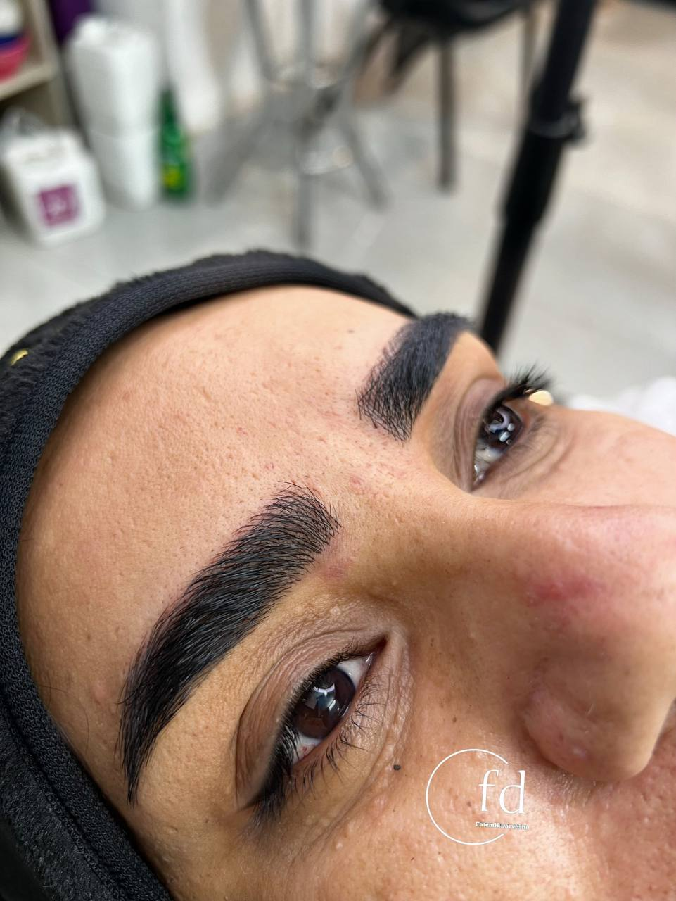

مراقبتهای ضروری بعد از فیبروز ابرو که باید بدانید
نوشته شده در تاریخ ۱ تیر ۱۴۰۴
تبریک میگویم! شما با انجام فیبروز، قدم بزرگی برای داشتن ابروهایی زیبا و طبیعی برداشتهاید. اما کار اینجا تمام نمیشود. نتیجه نهایی کار، ۵۰٪ به مهارت من به عنوان پیگمنتر و ۵۰٪ به مراقبتهای دقیق شما در دوران نقاهت بستگی دارد. در این مقاله به صورت کامل تمام نکاتی که برای رسیدن به بهترین نتیجه نیاز دارید را توضیح میدهم.
یک ضربالمثل در میان متخصصان زیبایی وجود دارد که میگوید: "فیبروز در سالن انجام میشود، اما نتیجه در خانه ساخته میشود." این جمله اهمیت مراقبتهای بعد را به خوبی نشان میدهد.
سه روز اول: دوران طلایی
سه روز اول بعد از انجام فیبروز، حیاتیترین زمان برای تثبیت رنگدانههاست. در این مدت باید بسیار با احتیاط رفتار کنید.
- عدم تماس با آب: مهمترین قانون! به هیچ عنوان نباید به ابروهایتان آب بخورد. هنگام دوش گرفتن یا شستن صورت بسیار دقت کنید.
- استفاده از پماد: از پمادی که به شما دادهام (معمولاً ویتامین A چشمی)، روزی ۳ بار یک لایه بسیار نازک روی ابروها بزنید. از زیادهروی در مصرف پماد خودداری کنید، چرا که باعث ریزش رنگ میشود.
- عدم دستکاری: از خاراندن، کندن پوستههای ایجاد شده یا دست زدن به ابروها جداً خودداری کنید.
هفته اول: شروع دوره تثبیت
بعد از سه روز اول، میتوانید به آرامی روند عادیتری را در پیش بگیرید، اما همچنان با احتیاط.
- شستشوی صحیح: از روز چهارم میتوانید صورت خود را با آب ولرم و یک شوینده بسیار ملایم (مانند شامپو بچه) به آرامی بشویید. از کشیدن لیف یا حوله روی ابروها خودداری کرده و با یک دستمال تمیز به صورت ضربهای خشک کنید.
- ممنوعیتها: در هفته اول از رفتن به سونا، استخر، جکوزی و انجام فعالیتهای ورزشی سنگین که باعث تعریق زیاد میشود، خودداری کنید.
- آرایش ممنوع: به هیچ عنوان از لوازم آرایشی روی ابروها یا اطراف آن استفاده نکنید.
تا یک ماه بعد: مراقبتهای تکمیلی
پوست شما در حال بازسازی است. برای حفظ زیبایی ابروهایتان این نکات را رعایت کنید.
- محافظت در برابر آفتاب: نور مستقیم خورشید میتواند باعث کمرنگ شدن ابروهای شما شود. هنگام بیرون رفتن حتماً از کلاه یا عینک آفتابی بزرگ استفاده کنید.
- پرهیز از لایهبرداری: از استفاده از هرگونه کرم لایهبردار، اسکراب یا انجام میکرودرم در ناحیه پیشانی و ابرو خودداری کنید.